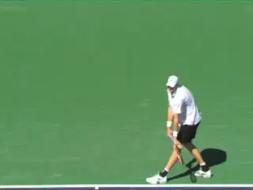
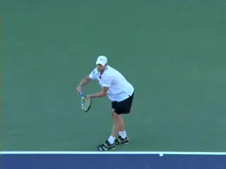
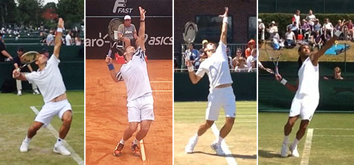

1-2 Rhythm - The Serve¶
1-2 Rhythm: The Serve¶
Nick Wheatley¶

What are the real checkpoints for the two rhythm phases on the serve?
A key component in learning and executing the serve is what I call 1-2 Rhythm. This is analogous to 1-2 Rhythm on the groundstrokes, as we have discussed in the preceding articles. (Click here for the first article in that series.)
1-2 Rhythm is the key to timing and also great energy transfer on all the strokes. But it is probably even more important on the serve, the one shot in tennis most associated with rhythm.
In this article, I present a different perspective on the critical moments in the serve. These new checkpoints will give you a different, tangible, powerful way to key your serve and maximize not only explosiveness but reliability.
2 Phases
To review the concept, 1-2 Rhythm divides tennis strokes into two phases or parts. Part 1, the set-up phase, is smooth and deliberate. Part 2, the execution phase, is explosive and full of energy.
So what are the two service phases? Phase 1 begins with the start of the windup and ends when the tossing arm is extended and the legs are fully coiled. Phase 2 then begins with the explosion of the legs upward into the shot. Understanding this transition solves much of the confusion players have about the timing of the key positions and how to execute them consistently.
Phase 1

The interval for Phase 1 varies dramatically for top servers yet all are smooth and deliberate.
Players all have a ritualistic process they go through before they start the service motion, some more involved and complicated than others. Phase 1 begins after these rituals are complete.
This is when the arms start to move. Usually this is the movement of the arms slightly downward before breaking apart.The tossing arm then moves downward and backward and then moves upward to make the actual toss, although the amount of downward and backward movement varies significantly with individual players.\<A J-Curve or arc >
Meanwhile the racket windup begins. The shape of this windup or backswing can also vary tremendous, from some variation of a semi-circular shape to abbreviated motions in which the initial motion of the hand and racket is actually upward.
What ties all these variations together is the smooth and deliberate feeling of the motion, the essence of Phase 1. This feeling applies to the ball toss motion, in which the arm drops and then extends slowly and evenly. The release of the ball causes virtually no disruption to the speed of the tossing arm as the ball departs from the fingers.
This slow and deliberate feeling also applies to the windup. Quantitative studies show that there is very little acceleration of the racket as the players move through Phase 1. The movement to the trophy position can take 2 seconds or more, and the racket head speed during this interval is usually 10mph or less. (link.)

Note the differences in tossing arm and racket positions for elite juniors at the end of Phase 1.TransitionIt might seem logical that the transition between Phase 1 and Phase 2 happens at the trophy position, since so much is made of it in coaching and teaching.In reality the true initiation of Phase 2 is the leg drive, synchronized with the extension of the tossing arm.
High speed video shows the trophy position for different players simply does not correspond with the explosive start of Phase 2. The variations in the both the shape and the timing of the windups of great servers effects when players reach the trophy position. And for many or most, the trophy position simply does not correspond directly with the full coiling of the legs.

Despite the Phase 1 differences, the timing of the explosive Phase 2 is the same.What does correspond is the extension of the tossing arm. Different players extend their tossing arms more and less directly upward--or even slightly backward. Whatever these variations, the two checkpoints are synched at the beginning of Phase 2. That may seem surprising, but we can see this clearly if we measure the actual duration of the two phases for great servers.
Let's use three great servers who have substantial differences in their Phase 1 motions and timing: Andy Roddick, Pete Sampras, and Roger Federer. There are big differences in the overall duration of the motion of these 3 champions. But these differences are all in duration of Phase 1.
What is surprising and critically important is that the duration of Phase 2 from the start of the explosion with the legs to the contact is virtually identical for all three.
As you might expect, Andy is the quickest in Phase 1. To complete Phase 1--reaching the extension of the tossing arm and the full coiling of the legs--takes him about .44 seconds. Pete takes more time to reach the same position at about .68 seconds. Federer takes the most time .88 seconds, almost twice as much as Andy. At this point all have extended their tossing arms and reached maximum knee bend. But note the differences in the arm and racket.
Andy's are famously to his right side. Pete is closer to the trophy position but not quite there. And Federer is a little closer than Pete, but still shy of the classic trophy position.
Now look at the timing of Phase 2. Watch the legs uncoil and explode. The timing to the contact is identical for all three players. How long? A little more than a third of a second, or .36 seconds to be exact.
Clearly Phase 2 is what initiates the energy transfer that creates massive racket acceleration, power, and spin. And these three great players are all timing it indentically.
As the legs drive up and forwards, the body is also rotating.The racket builds speed as it moves into the drop position, and then accelerates dramatically up to the contact point.The leg drive pushes both feet off the ground, and the players land with the front foot inside the baseline.
This transition point and the following explosion are key for players at all levels to master 1-2 Rhythm. So find your own transition point.
Feel the deliberate slow windup and the drop of your weight in your knee bend.Find the same feeling in the toss and the extension point of your tossing motion.Learn to make these checkpoints correspond.Now explode! Of course, you want to make sure your other key positions like the racket drop and the contact are within good technical parameters.
But don't worry about them or when, exactly, you are making the trophy position when you are serving in matches. Under pressure this clear feeling of the two phases will give you confidence and alleviate anxiety and pressure.
Second Serve

The distinction between the phases is identical for the second serve.There is no major difference regarding how 1-2 rhythm operates between the 1st serve and the 2nd serve,or indeed between how it operates between flat, slice, or topspin serves. The swing path from racket drop through contact point will vary depending on the type of serve the player is attempting, but the 1-2 Rhythm will remain the same, as does its function to create power and/or spin on the serve in a reliable and efficient manner.
Remember, 1-2 rhythm is founded on a relaxed body and hitting arm. Development should be through the use of the descriptive terms highlighted at the start of the article, feeling the set-up phase is smooth and deliberate, and then the feeling of energy and explosiveness that is associated with part 2.
I'm a big believer in using shadow swings to generate feel, and this can really help with the serve with the players pausing in the shadow swing at the knee bend with the tossing arm extended to really feel the position and also the power potential they are about to unleash.
As with all the strokes, it's also critical to video the serve in high speed, and review the footage to look at the set-up phase, the execution phase, and of course see what is happening when Part 1 ends and Part 2 begins!
|  | His junior teams, the Hawker Jets, have won 44 |
| competitions since formation, and over the last 2 | |
| years alone, his junior players have won 19 | |
| singles tournaments between them at county level. | |
| He has been ranked in the top 75 nationally in 35 | |
| and over singles and in the top 5 in Surrey | |
| county. Nick has done video analysis for numerous | |
| players at all levels, including former British | |
| Top 10 player Marcus Willis. | |
| His unique teaching video series, covering every | |
| aspect of the game, is available on his website | |
| www.nickwtennis.com | |
| You can also |